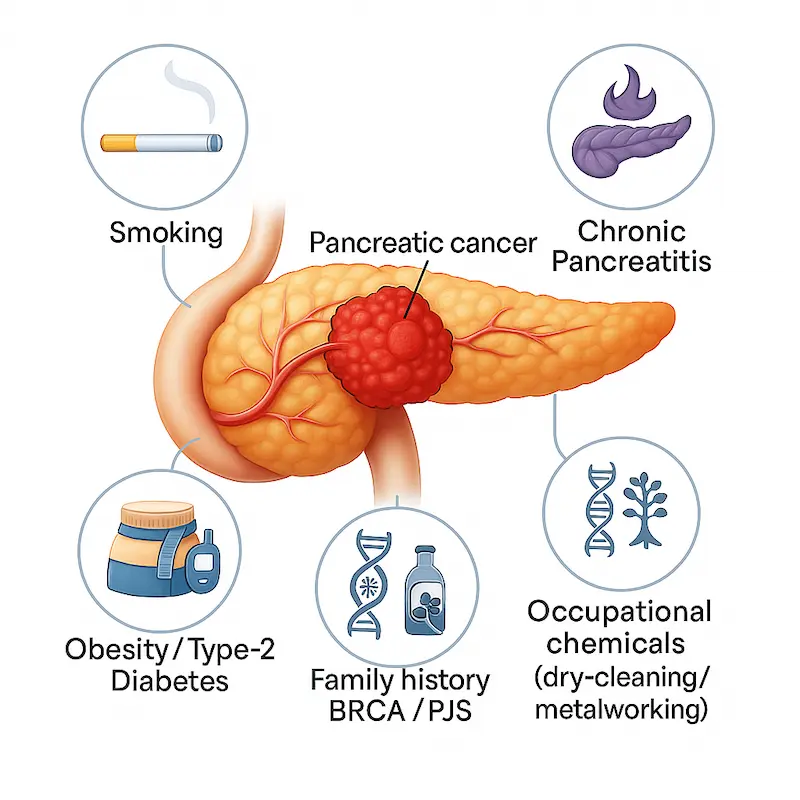
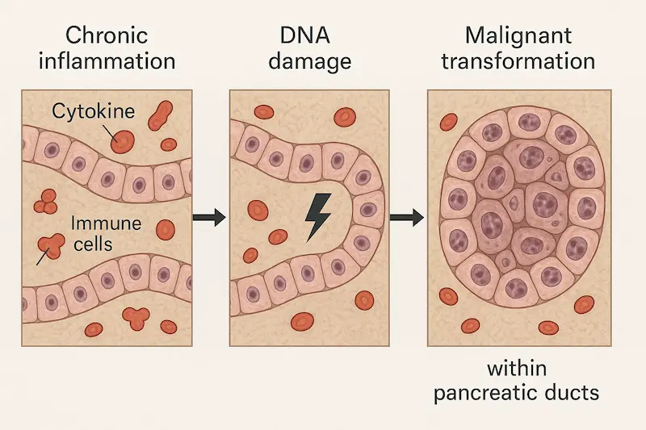
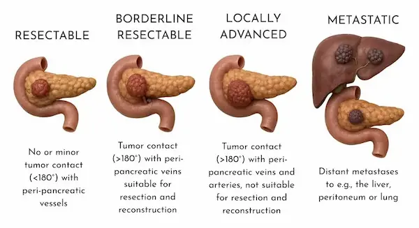
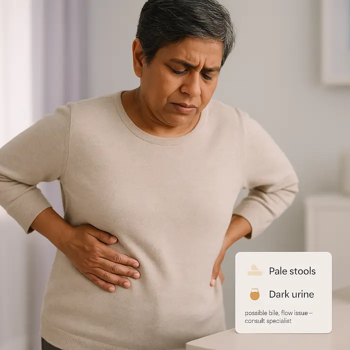
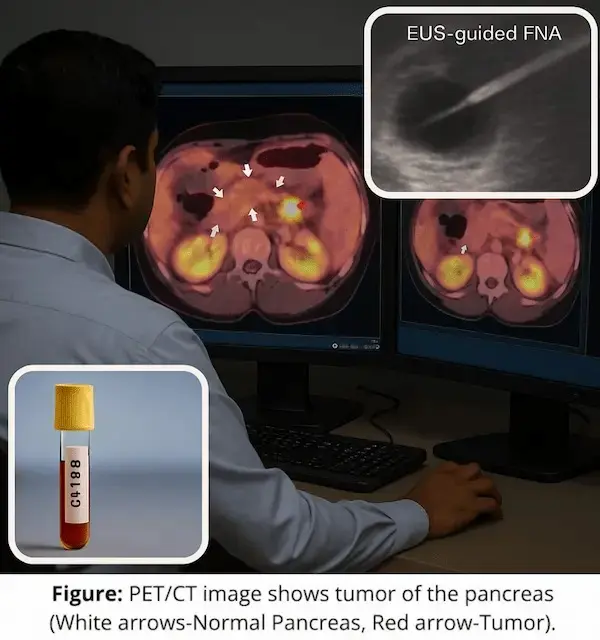
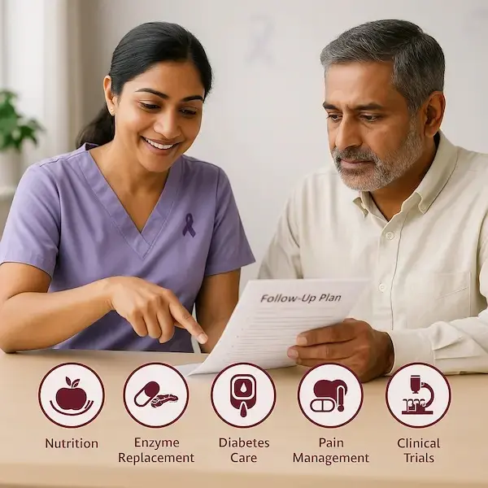
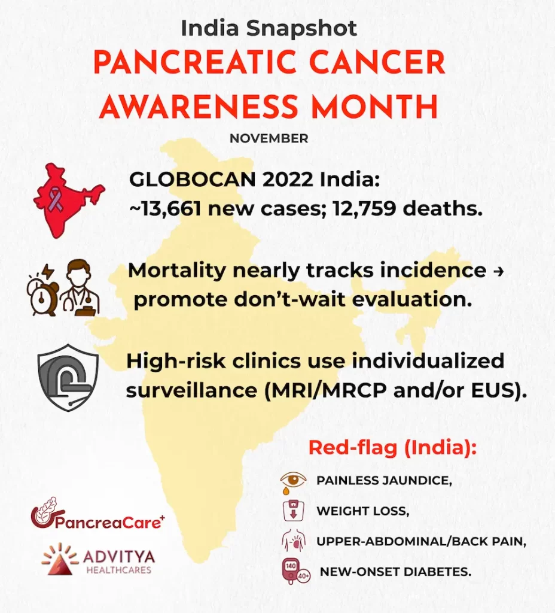

Overview: November is Pancreatic Cancer Awareness Month—an opportunity to amplify awareness, early recognition, and timely specialist care. The purple ribbon is the recognized symbol of solidarity and support.
Overview:
November is Pancreatic Cancer Awareness Month—an opportunity to amplify awareness, early recognition, and timely specialist care. The purple ribbon is the recognized symbol of solidarity and support.
Etiology & Risk Factors

Key risk factors include:
- Tobacco use
- Excess body weight and Type 2 diabetes
- Chronic pancreatitis (often linked with alcohol/tobacco)
- Family history and inherited syndromes (e.g., BRCA1/2, PALB2, Peutz-Jeghers)
- Selected occupational exposures (e.g., solvents/metalworking fluids)
India note (optional line in this section): Chronic pancreatitis—including tropical calcific pancreatitis seen in parts of India—carries a higher relative risk; escalate evaluation if pain/weight loss or sugars worsen.
Pathogenesis & Causes

Most pancreatic adenocarcinomas arise after long-standing inflammatory injury with accumulation of genetic alterations. This underlines the role of multidisciplinary evaluation and guideline-based care.
Cancer Staging

Accurate staging guides therapy. Many centres categorise tumours as:
- Resectable
- Borderline resectable
- Locally advanced
- Metastatic
This anatomy-based call determines whether patients proceed to surgery first or receive systemic therapy/chemoradiation before—or instead of—surgery.
Signs & Clinical Presentation

Watch for persistent combinations of:
- Painless jaundice, dark urine, pale stools
- Upper abdominal or back pain
- Unintended weight loss, poor appetite, nausea
New-onset diabetes or worsened glycaemic control (India: even after 40 merits attention when paired with weight loss)
Diagnostic Approaches

Typical pathway:
- Pancreas-protocol CT and/or MRI/MRCP
- EUS-guided FNA (tissue diagnosis) when needed
- CA 19-9: helpful for monitoring/prognosis, not population screening
Treatment Modalities
- Curative / Surgical
- Whipple (pancreaticoduodenectomy) for head lesions; distal or total pancreatectomy as indicated
- Adjuvant chemotherapy typically follows surgery
- Borderline Resectable / Locally Advanced
- Often neoadjuvant chemotherapy ± radiation to improve R0 (margin-negative) resection chances, then restage
- Metastatic
- Systemic therapy (commonly FOLFIRINOX, NALIRIFOX, or gemcitabine + nab-paclitaxel)
- Consider biomarker-driven options for MSI-H/dMMR, NTRK fusions, or rare KRAS G12C
- Supportive Care
- Biliary stenting (ERCP) for itch/jaundice relief
- Pain control (including celiac plexus blocks)
- Nutrition & pancreatic enzymes to counter malabsorption/weight loss
India-ready notes to add in this section (short):
- Adjuvant standard for fit patients: modified FOLFIRINOX; gemcitabine + capecitabine if FOLFIRINOX is unsuitable.
- Regimen choice tailored to performance status, toxicity profile, and access.
Survivorship & Aftercare

Key elements:
- Imaging and labs for surveillance as advised
- Pancreatic enzyme replacement (commonly ~30–40k lipase units with meals; 15–20k with snacks—titrated by clinicians)
- Dietetic support and diabetes optimisation
- Early palliative-care integration for pain, sleep, and quality-of-life
- Discuss clinical trials at each decision point
India Snapshot

Conclusion: Awareness Leads to Action
Takeaway: Recognising subtle signs and moving quickly to a specialist team can change the story. If you have a strong family history or red-flag symptoms, ask about pancreas-protocol imaging, genetic counseling, and whether you’re eligible for high-risk surveillance.
Additional Resources
- India/Practice:
- Indian guidance/consensus (oncology practice journals; GI/HPB working groups)
- Clinical Trials Registry–India (CTRI) — search “pancreas”
- Global/Patient-friendly:
- American Cancer Society — Pancreatic Cancer (risk factors, symptoms)
- NCI PDQ — Pancreatic Cancer (diagnosis, staging, treatment)
- NCCN Guidelines for Patients — Pancreatic Cancer (treatment pathways)
- Pancreatic Cancer Action Network (awareness & trial finder)
Have a question this article does not answer?
Send us your reports. A specialist reviews them before you travel, so the first visit begins with a plan rather than a repeat test.